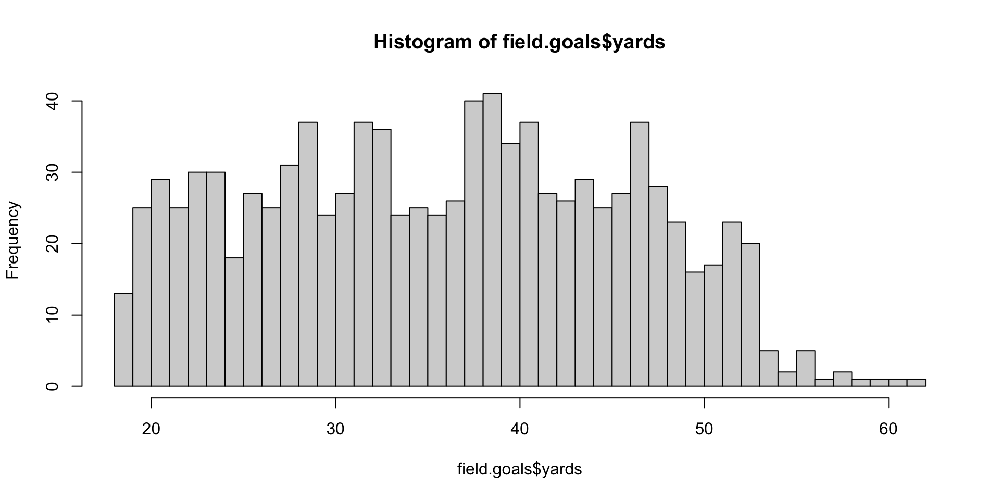
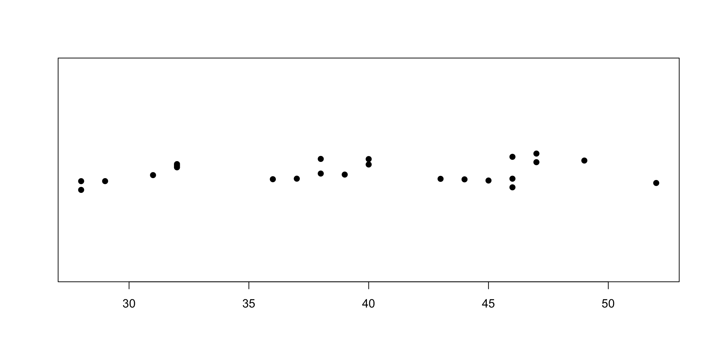

[1] 6[1] 7[1] 9第三章：R 快速入門
實踐大學
2026-06-07
在提示字元輸入運算式，R 便會求值並印出結果。算術運算與直覺完全一致，並遵守一般的優先順序：
每個答案前面的 [1] 透露了 R 最核心的設計決策：每個數字都是向量。方括號裡的數字是該列第一個元素的索引——這裡每個結果都是長度為一的向量。
向量（vector）是一串有順序的值。用 c()（combine 的縮寫）建立向量，或用冒號運算子產生整數序列：
[1] 0 1 1 2 3 5 8 [1] 1 2 3 4 5 6 7 8 9 10 11 12 13 14 15 16 17 18 19 20 21 22 23 24 25
[26] 26 27 28 29 30 31 32 33 34 35 36 37 38 39 40 41 42 43 44 45 46 47 48 49 50向量較長時，每列開頭的 [23] 之類的標記，顯示的是該列第一個元素的索引。
兩個向量間的運算是逐元素進行的：
[1] 11 22 33 44[1] 10 40 90 160長度不同時，較短的向量會被回收（recycled）——反覆使用直到補滿較長者：
[1] 2 3 4 5[1] 11 102 13 104Warning in c(1, 2, 3, 4, 5) + c(10, 100): longer object length is not a
multiple of shorter object length[1] 11 102 13 104 15當較長者的長度不是較短者的整數倍時，R 會發出警告——這通常是程式有錯的徵兆。
文字值是字元向量；其他語言所謂的「字串」，在 R 裡是單一個字元值：
[1] "Hello world."[1] "Hello world" "Hello R interpreter"一行中 # 之後的內容都是註解，直譯器會忽略：
R 的工作都由函式完成，呼叫形式就是數學課熟悉的 f(argument1, argument2, ...)：
引數可以依名稱或依位置對應：
Note
運算子也是函式。 +、^、== 這些符號會被直譯器轉換成函式呼叫；2 ^ 10 與 "^"(2, 10) 是同一個計算。
用箭頭運算子 <- 把值指派給名稱，之後便能重複使用：
x 與 X 是不同的變數。ls() 列出目前定義的變數；rm(x) 刪除變數。= 指派，但 <- 是 R 的通用慣例，本課程一律使用它。陣列（array）是帶有 dim 屬性（描述形狀）的向量；矩陣（matrix）是二維的特例：
[,1] [,2] [,3] [,4]
[1,] 1 4 7 10
[2,] 2 5 8 11
[3,] 3 6 9 12[1] 5陣列可以有三個以上的維度：
R 的下標語法非常精簡：每個維度一個索引、以逗號分隔，留空代表「全部」：
向量與陣列只能容納單一型別；串列（list）則可自由混合型別，元件可以命名，並以名稱或位置存取：
串列是 R 的萬用容器：模型結果、解析後的檔案，乃至多數複雜物件，底層都是串列。
資料框（data frame）是一組等長向量構成的串列，以表格呈現——它是資料集的標準表示法：一列一筆觀測值、一欄一個變數：
R 的每個值都是物件，每個物件都有描述其身分的類別（class）：
[1] "numeric"[1] "character"[1] "data.frame"[1] "function"print()、summary() 這類泛型函式會檢查引數的類別並分派到對應的方法——這就是為什麼對向量與對迴歸結果呼叫 summary()，輸出完全不同。第十章會深入剖析這套機制。
統計關係在 R 中以公式記號表達：y ~ x1 + x2 讀作「以 x1 與 x2 為解釋變數建模 y」。對線性模型
\[y = c_0 + c_1 x_1 + c_2 x_2 + \cdots + c_n x_n + \varepsilon,\]
我們用 lm() 估計。內建的經典資料集 cars（1920 年代的煞車距離）正好拿來示範：
直接列印只會顯示呼叫式與係數；summary() 則報告殘差、標準誤、\(t\) 統計量、\(p\) 值與 \(R^2\)：
Call:
lm(formula = dist ~ speed, data = cars)
Residuals:
Min 1Q Median 3Q Max
-29.069 -9.525 -2.272 9.215 43.201
Coefficients:
Estimate Std. Error t value Pr(>|t|)
(Intercept) -17.5791 6.7584 -2.601 0.0123 *
speed 3.9324 0.4155 9.464 1.49e-12 ***
---
Signif. codes: 0 '***' 0.001 '**' 0.01 '*' 0.05 '.' 0.1 ' ' 1
Residual standard error: 15.38 on 48 degrees of freedom
Multiple R-squared: 0.6511, Adjusted R-squared: 0.6438
F-statistic: 89.57 on 1 and 48 DF, p-value: 1.49e-12配適好的模型本身也是資料——你可以從中萃取係數、殘差與預測值。本課程的第五部分將專門討論這類模型。
教科書把範例資料放在 nutshell 套件中，以 library(nutshell); data(...) 載入。該套件已自 CRAN 下架，因此本課程改用更簡單的慣例：先把資料集從 CRAN 的 GitHub 鏡像下載到暫存檔，再載入。
[1] "home.team" "week" "qtr" "away.team" "offense"
[6] "defense" "play.type" "player" "yards" "stadium.type"Tip
記住這個模式。 把 xxx 換成資料集名稱即可： temp <- tempfile(fileext = ".rda") download.file("https://raw.githubusercontent.com/cran/nutshell/master/data/xxx.rda", temp, mode = "wb") load(temp)
field.goals 記錄了 2005 年 NFL 的每一次射門（field goal，踢進可得 3 分；yards 是嘗試距離）。畫直方圖只要一行：
增加組距數能看出更多結構——多數射門集中在 20 到 50 碼之間：

table() 統計類別變數的次數；點條圖（strip chart）為每筆觀測值畫一個點——這裡看的是被攔阻射門的距離：
FG aborted FG blocked FG good FG no
8 24 787 163 
三個工具可以在不離開 R 的情況下回答大多數問題：
??topic 是 help.search("topic") 的縮寫。版權聲明。 本教材改編自 Joseph Adler 所著 R in a Nutshell: A Desktop Quick Reference（第二版，O’Reilly Media）。所有權利均由原作者與出版者保留。
僅供非商業用途。 本教材嚴格限定用於教育目的，不得用於商業獲利。
適當標註出處。 任何對本教材的重製、散布或使用，都必須適當標註原始出處。

R in a Nutshell: A Desktop Quick Reference